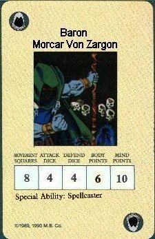

Morcar Von Zargon
by The Scorpion

Download the Morcar Von Zargon Monster Card (33K)
it was known that Morcar von zargon had magical gifts at his birth. on
the night he was born a demon came to earth and touch the forhead of
zargon. zargons mother died of fright from this. his father died later
when he tried to battle the demon. the demon then took the guise of a
young maid and ran and laid the baby at the door of mentor's study.
mentor was a kind man. but also very wise. and used magic to learn
about zargons birth. but mentors heart got the better of him and he
raised zargon. thinking he could convince him to battle against chaos
instead of for. mentor was wrong. when zargon grew older he wished to
know more and more about magic. at first this did not alarm mentor. but
when zargon wanted to learn dark magics mentor told him he would no
longer teach him untill he got these foolish ideas out of his head.
zargon that night crept into mentors study and opened loretome. the
book was to much for zargon. and blinded him and crippled one leg.
mentor hearing a noise ran to see zargon. hurt and wounded. mentor took
pity. but zargon did not want pity. he was enraged that he could not
use the magics of loretome and the next day. he summoned a demon to
take him away. the demon took him to the chaos wastes and bound himself
into zargon. zargon now with the soul of a demon as well as his own
inside him. had more magic even then mentor. and was soon known through
the land as the most powerful wizard in the old world. he gained land
and apointed himself the title of baron, though he does not know wether
his parents were royalty or not. and then. he tried loretome again and
went to mentors study and stole the old book. the very fabric of the
world trembled at this and mentor flew after him when mentor found
zargon he was peering over the books with several monstrosities around
him zargon raised his hand at mentor and shot forth a bolt of black
magic at him witch mentor could barely counter. zargon once again tried
to cast magic from loretome. and once again loretomes magics atacked
zargon. this gave mentor the opurtunity to grab loretome and cast
escape. zargon realised if he could still not use loretome he would
need help. he gained the service of the witchlord. and apeared to the
orcs as a new leader. and banded all the orc tribes togethor, he gained
the help of ogres and beasts of the frozen borderlands. with his new
armys and the dark gods and there demons on his side. zargon started to
level the citys of the empire. yet still with all his power. he swears
one day to hold the power of loretome. the only thing that seems to be
out of his reach.
the demons name is zargon and the morcars is morcar. von means of a part
of or conected to in german. the empire in old world are germanic/french
people. so the name morcar von zargon. is morcer(the wizard) von(conected to "of")
Zargon(the demon) this is taken somewhat out of context. throw it up to morcars
twisted sense of humor though.
Interpretation of story by
Carl "The Scorpion" Heyl
Special abilities
Spellcaster - Zargon can cast any spell in heroquest. chaos earth fire water air elf
and even the mages of morcar spells if you use them any spell used in
your game zargon has and can cast any number of times. but still once
per turn
Uses
Zargon is a difucult fight. but in no way does beating zargon end the
game. zargon is a servant to dark gods. who will continue to try and
conquer the old world way after zargons death. Zargon ability to cast
so many spells any number of times is his real danger. if a hero damages
him he just lets out with a heal spell. so bassicaly zargon must be destroyed
in one hero partys turn
Sugested Miniature
Chaos warlock. any cloaked wizard.